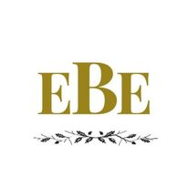

Overview
Purpose
Hello, I'm Elise Ballard. I'm a freelance event planner and artist from Arizona. Creating memorable experiences and environments is something I've been passionate about since I was very young. I've studied as an artist with the goal to connect imagination to the paper, but as a planner it's my goal to connect the imagination with reality. I will be receiving my Bachelor of Art in Spring 2022.
Audience
The audience would be anyone who wants to hire someone who would design and coordinate themed events. Because of my niche, my audience would be people who would be particular about their event's themes. For example, a Great Gatsby-themed wedding or a fairy-themed child's birthday party would fall perfectly into my area of expertise. Anyone who strives to immerse their attendees in their event through their theme is the preferred audience that I'd like to collaborate with.
Branding
Website Logo
Style Guide
Color Palette
Palette URL:
https://coolors.co/396e94-e7c24f-a43312-381d2a-aabd8c| Primary /th> | Secondary | Accent 1 | Accent 2 |
|---|---|---|---|
| [#E7DFE6] | [E6C7C4] | [#ffffff] | [#949494] |
Typography
Heading Font: [Nuosu SIL]
Paragraph Font: [Charis SIL]
Normal paragraph example
Elise Ballard Events is here to assist in making your events be the most immersive experience that you can have. This is in hopes of making impactful memories that can be cherished for the rest of your. I plan for events like, but are not limited to, wedding, birthday parties, themed parties etc.
Colored paragraph example
Elise Ballard Events is here to assist in making your events be the most immersive experience that you can have. This is in hopes of making impactful memories that can be cherished for the rest of your. I plan for events like, but are not limited to, wedding, birthday parties, themed parties etc.
Navigation
Site Map
Wireframes
Home

[Portfolio]
Portfolio Photos